Exploration
Cyborg Interactions
To investigate the experience of human + technology interactions, I prioritize making as a method of research and went through three cyborgs to enhance human physical abilities, human body and distribution human mind to build my own terrtoriy of cyborg interactions.
Body language
A wearable heart rate sensor tells how’s your feeling right now from your heart rate. Hear the voice of your body as an information resource to understand yourself.


Projection
A physical helmet brings the social media expression and avatar to the real world social situation. The digital expression blurs the true facial expression. Since the expressions on helmet are controlled and selected by the helmet’s program, users have to cooperate with it to express himself.


Decisions
Buttons bridge human and machine. But the standard buttons do not imply an emotional connection with what they are controlling. Two buttons act total different function, while they might have precisely same appearances. How it might be if we remove the buttons in our interaction with machines.


Through these three rapid projects, I have more interested in the social media territory. The boom of social media is changing our real social life. People are obsessed with social media, even though they are physically together. There is an increasing new relationship called social media friends. And people are having their social network identity card. Therefore I went deeper in this territory.
To Avatar
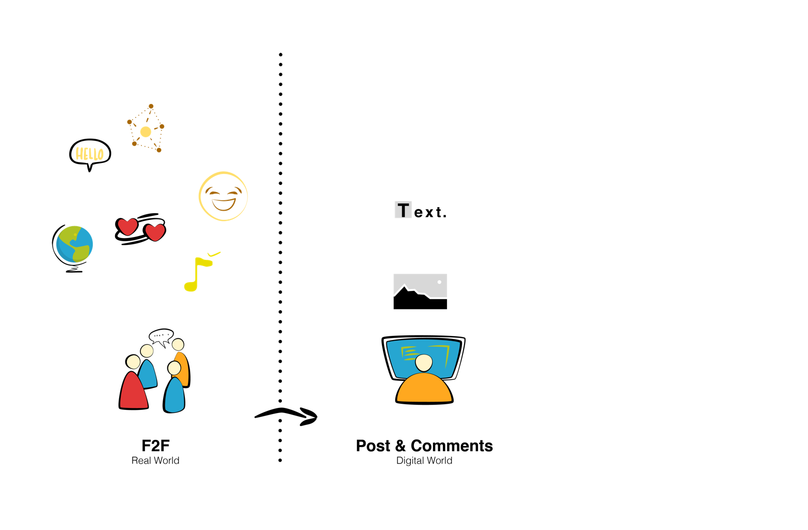
In F2F social, the body language, the voice tone, the in-depth dialogues and the understanding of context contribute to the relevant communication.
On social media, because of the restriction, the contexts are images and limited texts cited and distorted from the real world. To express a clear idea through text and image is a professional skill and hard to master, not to mention the shallow post and comment on social media. They are distorted illusions.
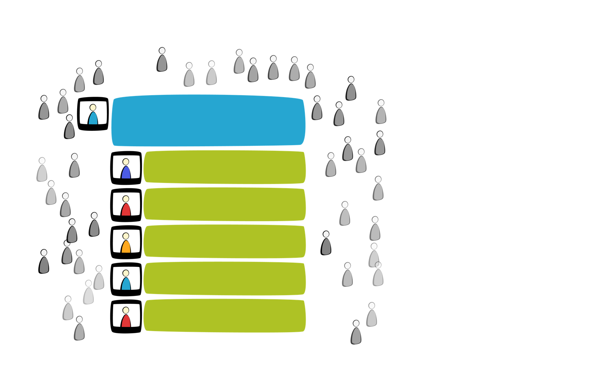
Post and comments build the context of social media. Every user is the part of this community. The presenter and commenter reveal themselves to the “friends” or follower. There are much more viewers around the post and comments which create a different phenomenon from the real world. In social media, silence equal invisible.
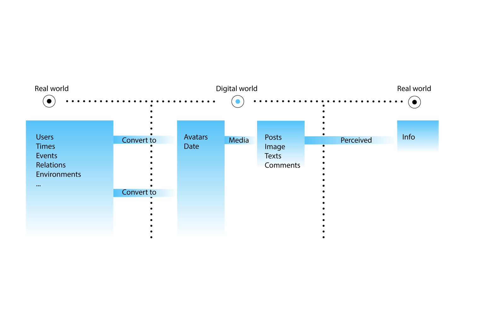
Prototype goals
Build a head-mounted device as an avatar, showing the illusion of user’s personality or distorted appearance, enable user control the connections with the people around, to explore the user’s behaviors and their interactions.
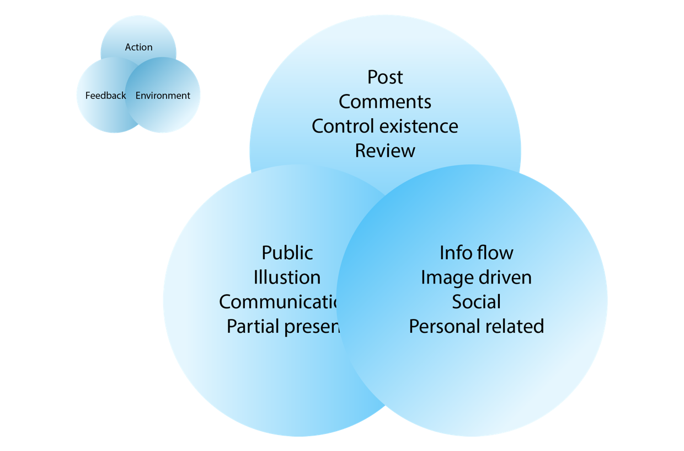
Action
Control
Use sound to turn on the light, which gives the users any intuitive control when they want.
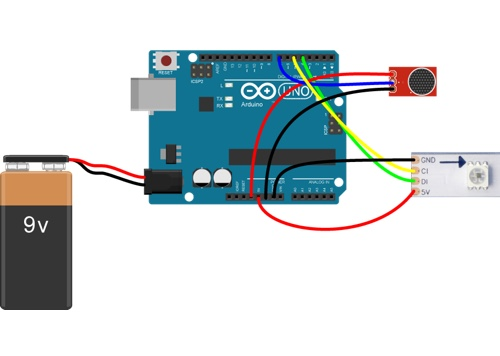
#include <Adafruit_NeoPixel.h>
#ifdef __AVR__
#include <avr/power.h>
#endif
#define PIN 6
#define NUMPIXELS 60
Adafruit_NeoPixel pixels = Adafruit_NeoPixel(NUMPIXELS, PIN, NEO_RGB + NEO_KHZ800);
int delayval = 200; // delay for half a second
int sensorPin=7;
boolean val =0;
void setup() {
// #if defined (__AVR_ATtiny85__)
// if (F_CPU == 16000000) clock_prescale_set(clock_div_1);
// #endif
// End of trinket special code
pinMode(sensorPin, INPUT);
pixels.begin(); // This initializes the NeoPixel library.
pixels.show(); // This initializes the NeoPixel library.
// Serial.begin (9600);
}
// int head = 0, tail = -10;
uint32_t color = 0xFF0000;
uint32_t black = 0x000000; // 'On' color (starts red)
int countNumberSound = 0;
void loop() {
val =digitalRead(sensorPin);
Serial.println (val);
// Serial.println (countNumber);
// Serial.println (countNumberSound);
if (val==0)
{
// begin count
countNumberSound += 1;
if (countNumberSound > 100)
{
/* code */
countNumberSound = 100;
}
}else{
countNumberSound -= 1;
if (countNumberSound < -100)
{
/* code */
countNumberSound = -100;
}
}
if (countNumberSound > 30)
{
/* code */
for (int i = 0; i < NUMPIXELS; ++i)
{
// strip.setPixelColor(i, 255, 255, 255);
strip.setPixelColor(i, color);
}
strip.show();
}
if (countNumberSound < -30)
{
/* code */
for (int x = 0; x < NUMPIXELS; ++x){
strip.setPixelColor(x, black);
}
strip.show();
}
// if (countNumber < 20) {
// // countNumber = countNumber + 1;
// for (int i = 0; i < NUMPIXELS; ++i)
// {
// // strip.setPixelColor(i, 255, 255, 255);
// strip.setPixelColor(i, color);
// }
// strip.show();
// countNumber += 1;
// }
// else {
// for (int x = 0; x < NUMPIXELS; ++x){
// strip.setPixelColor(x, black);
// }
// countNumberSound = 0;
// strip.show();
// }
}
Feedback
Illusion
By shading the light in different directions, the facial expression continually change.
Environment
Visible/Invisible
Double-side mirror film acts as an on and off switch. Meanwhile, its reflection effect increases the illusion.
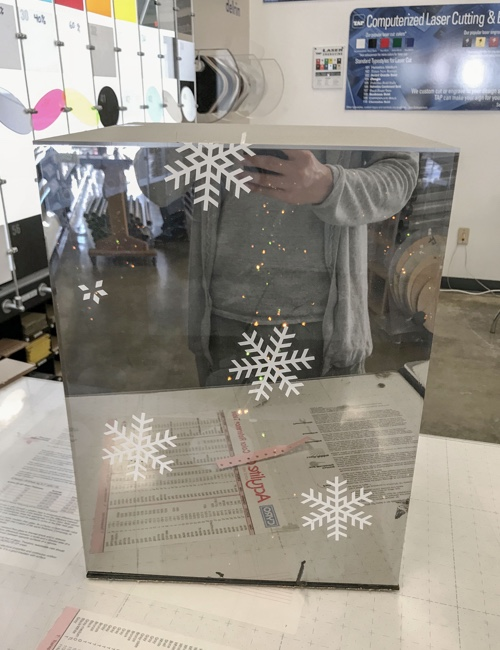
Prototype Experiment
Through bucket test, found the problems in the interactions, and refined them through iteration.
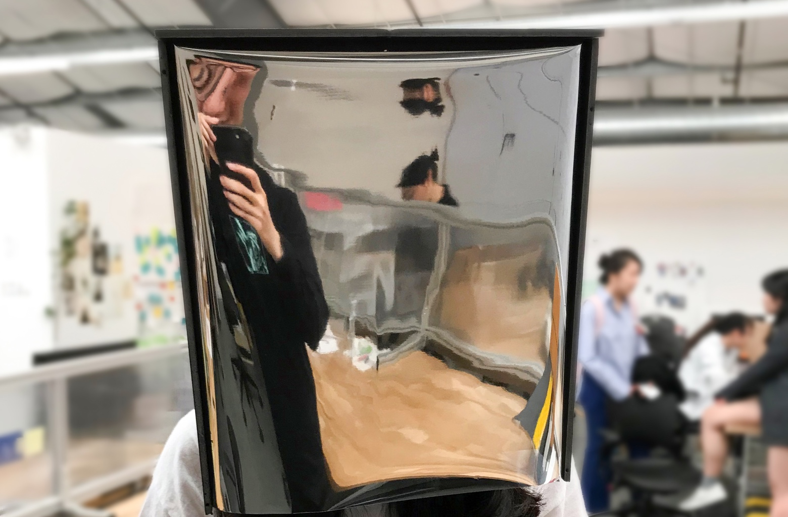
Feedback:
The users don’t have any desires to interact with others.
Reason:
Don’t know how to start the interaction.
Improve:
Make more helmet, creating a context for communication. I use the other helmet acting as an interaction sample.
Feedback:
Distractive light effect.
Reason:
The exposed led light and wire distract attention.
Improve:
Refine the structure and add a light-blocking layer.
Feedback:
The trigger becomes sluggish after long time use.
Reason:
The voltage level of the batteries become unstable.
Improve:
Prepare backup batteries and set up low voltage alert.
Feedback:
The light direction effect looks subtle.
Reason:
The mirror reflection reduces the shading effect.
Improve:
Add a light-blocking layer and put light closer to the face.
Experiments on Night Life
From the mass feedback of experiments, checked the original hypothesis to get more in-depth insights.
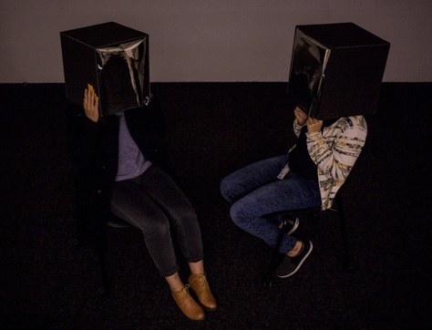
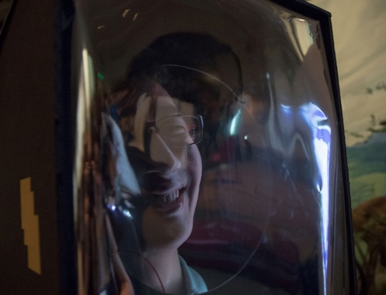
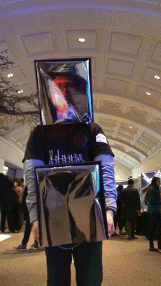
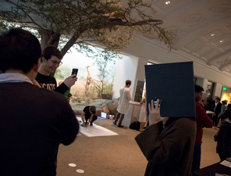
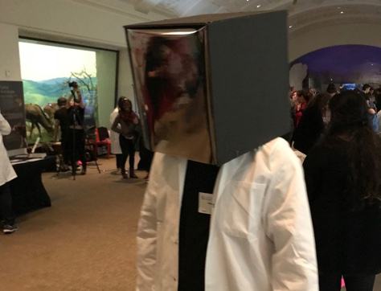
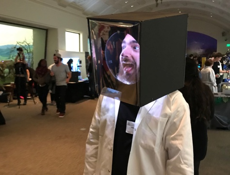
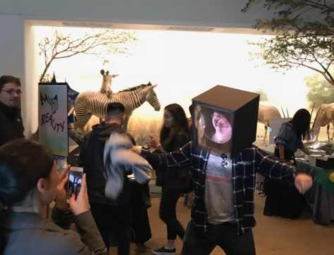
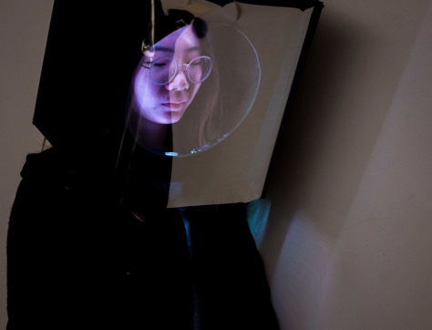
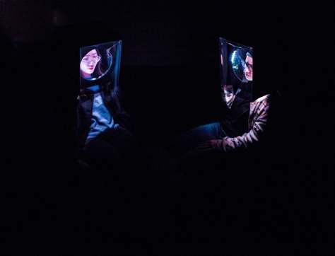
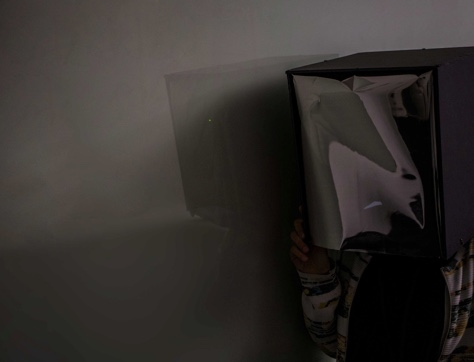
Hypothesis:
The distorted illusion of social media is a disadvantage and what user don’t want.
Unexpected:
People have fun with their illusions.
Insight:
According to the context, people like acting as a role to fit the atmosphere sharing similar features.
Hypothesis:
With the helmet, users want to keep talking to light up and show.
Unexpected:
The users have more time hiding behind the helmet. They isolate themselves from the environment.
Insight:
The mirror similar to sunglasses isolates users from the public, providing a sense of safety.
A Filter In Live
The users act different personality of themselves to fit in this context, forming isolated communities and environment. The community shares the similar values. Like a filter, it removes the irrelevant parts and keeps the similarity.
Analogy Prototype
Present the concepts with prototypes.
Polarizer Analogy
Tow polarizer film with tight tangle block the light, while when they separate they looks like normal film.
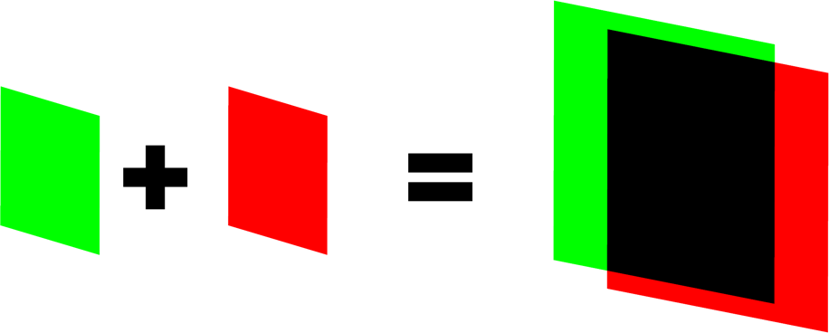
Color Analogy
Green filter adding red filter can block light, as they were applied in old version 3D movies.
Build Sceniro
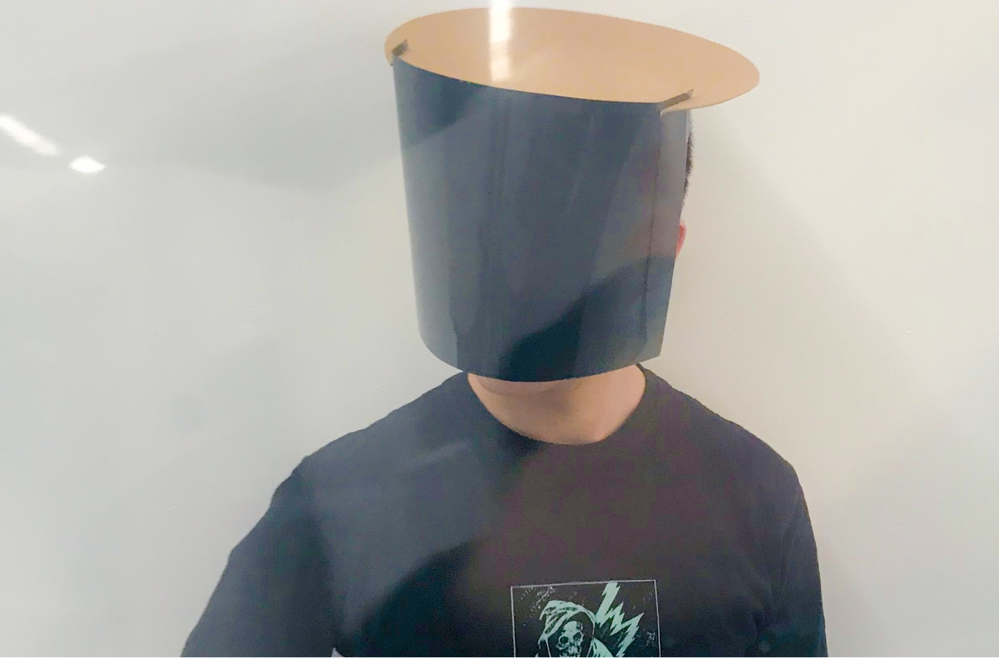
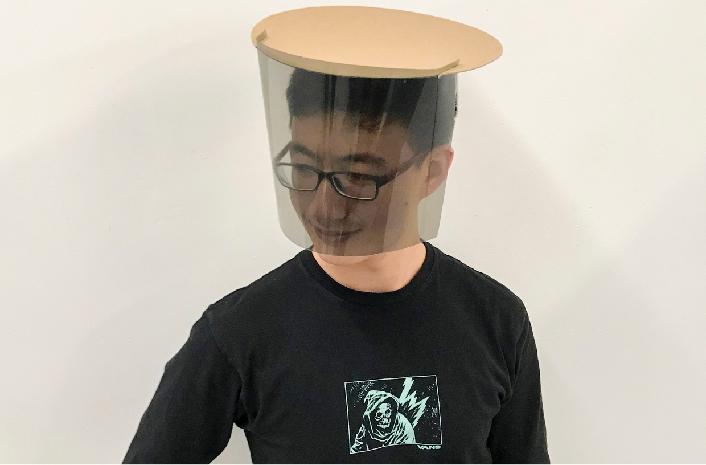
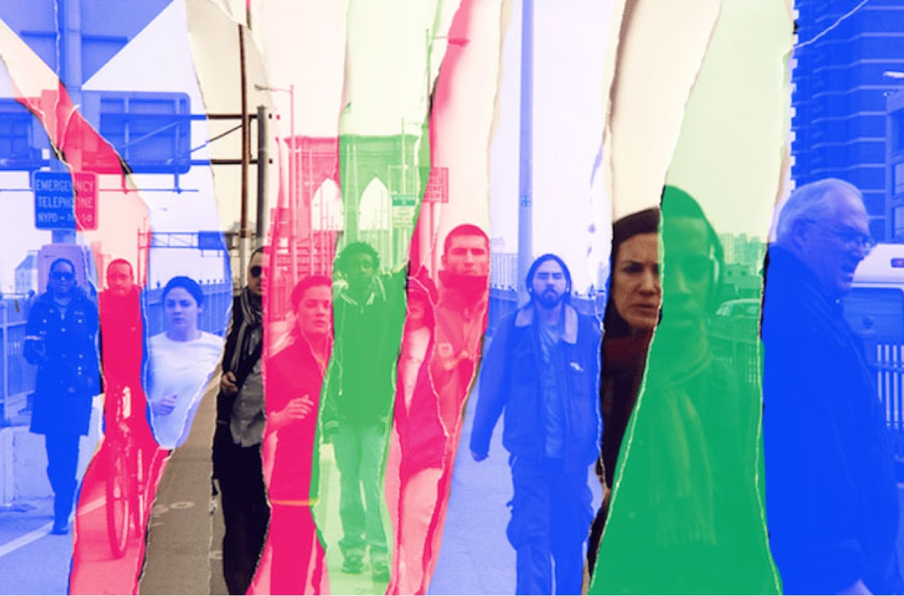
Video: Filter